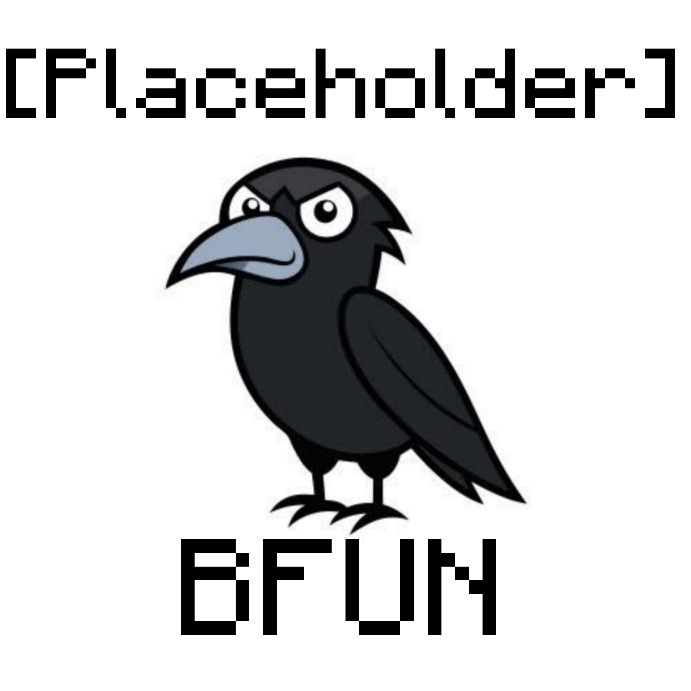
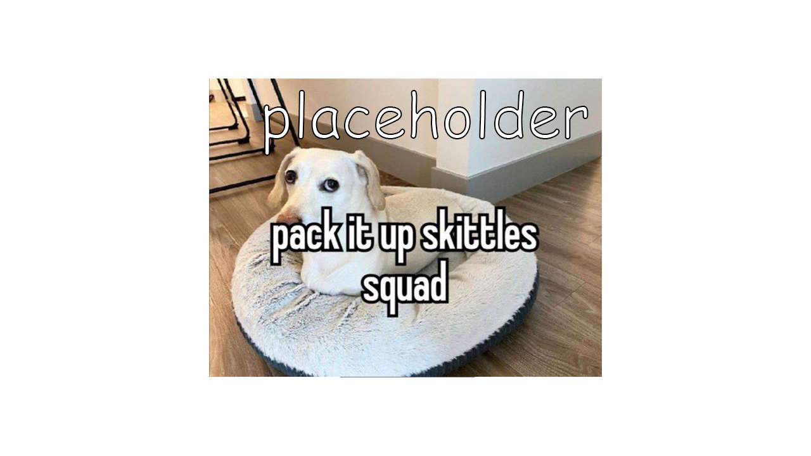
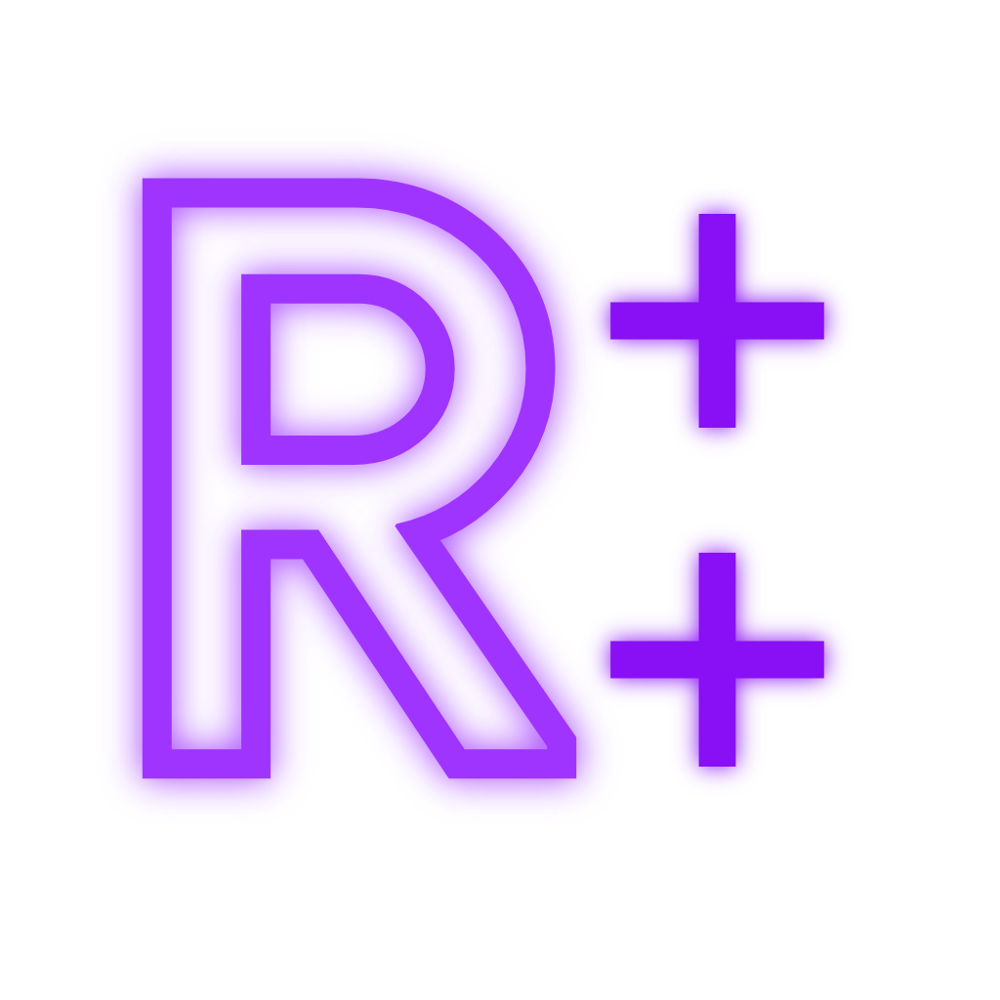

Crack Crew
Ghost clients para Forge
Raven BFun
È um novo Raven baseado na Source do Raven BS. Com bypass específico para o servidor Mushmc.com
 DownloadRaven BS
Raven BS é um client baseado na Source do Raven B3, tem um ótimo bypass para Hypixel, porém funciona para Mush também!
 Download
Download
Raven B+
Raven B+ é uma versão melhorada do Raven B3, feito pelo Kopamed. Esse Ghost Client é bem popular entre os jogadores do Hypixel
 DownloadRaven B++
Raven B++ feito por KingVoid é um ghost client de forge gratuito muito bom. Você tem que instalar o mod Essentials junto com o próprio Raven B++
 DownloadRaven B+++
Raven B+++ feito por Steven & Cosmic é uma build melhor que o do B++ os modulos são indetectaveis, Como LegitAURA e LegitSpeed
 Download
Download